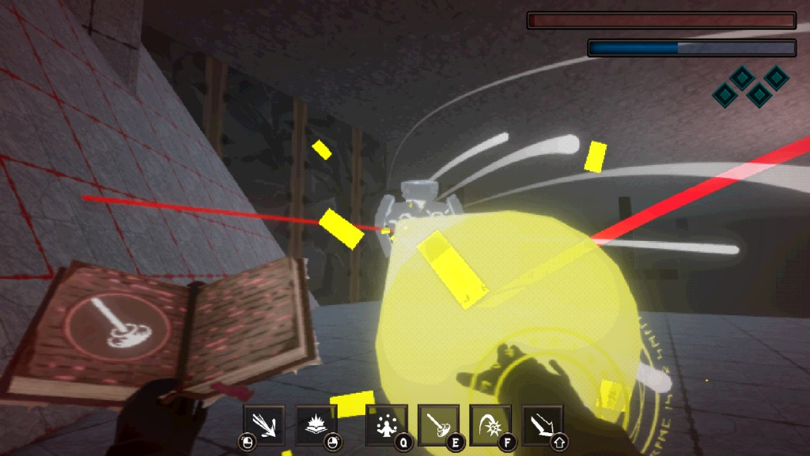

Ludum Dare 58 · Game Jam
Rogue Scribe
Dynamic action-parkour game made in Unity, focused on modular movement and spell systems.
- Role
- Gameplay & Systems Programmer
- Timeline
- 2 days initial build + 2 months further development
- Team Size
- Solo

Project highlight
- Implemented a Zenject-backed infrastructure state machine for the whole game: typed lifecycle states, payload-driven transitions, and routing Update / FixedUpdate / LateUpdate into whichever state is active.
- Built a graph-based gameplay state machine with conditional and catch-all (“any”) edges, state history, and multi-instance support (same state type, different index). A factory assembles machines from a flat list of StateConfiguration entries.
- Composed the player controller from the same core using ScriptableObject movement configs (BaseMoveStateConfig): each asset adds its own states plus a transition table, so a new mechanic set is mostly new configs, not a rewrite of the engine.
What I built
- Architected systems with Zenject DI and ECS-like design approach.
- Built modular ability/inventory/AI structures.
- Created highly composable state and spell systems, enabling rapid creation of movement states (wall run, gravity shift, dash) and spells (geyser, fireball, laser).
Challenges
- Created a state-machine builder system for the main character where gameplay changes significantly depending on which state configurations are passed as input.
- Built many mechanics in a short jam timeframe by using composable logic blocks for reusable movement and spell behavior.
- Kept architecture clean under rapid iteration pressure by applying modular boundaries and dependency injection.
Results & impact
- Jam-ready gameplay with multiple movement and spell combinations.
- System design supports fast feature extension.